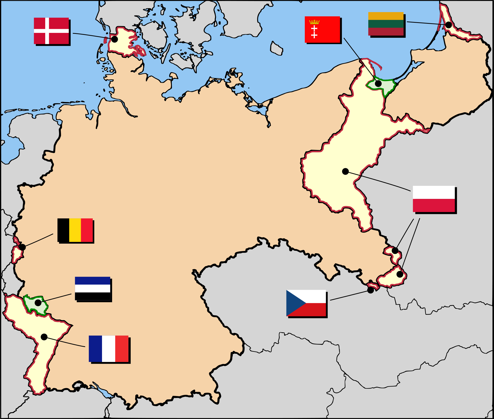
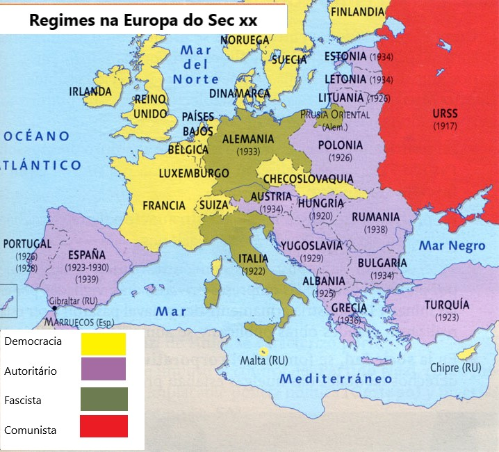
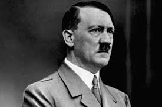

Antecedentes da Guerra
Alemanha pós-primeira guerra
Quando falamos em 2ºguerra Mundial, é, de conhecimento comum, que a Alemanha a começou. Mas que motivos e ódios teriam levado o povo alemão a iniciar tamanha guerra? A resposta é óbvia se analisarmos o período pós-1ª Guerra Mundial até á 2ª Guerra Mundial.
A Alemanha saiu derrotada da primeira guerra mundial, e como tal, sujeitou-se, para lá da humilhação, às condições dadas pelos países vencedores no tratado de Versalhes.
Todas estas condições agregadas a uma crise económica a nível mundial, levou a um grande descontentamento por parte do povo alemão, que sofria com a fome e a inflação.
Assim sendo, o revoltado e esfomeado povo alemão, refugiou-se nos discursos de Hitler.
Hitler era um homem austríaco nascido perto de Linz em 20 de abril de 1889. Mudou-se para a Alemanha em 1913, mesmo a tempo de participar na 1º grande guerra e em 1919 juntou-se ao partido dos trabalhadores Alemão, sendo que em 1921 tornou-se líder do mesmo.
Após uma tentativa de tomada de poder falhada em 1923, Hitler foi preso. Durante o período de encarceramento, escreveu um livro, a sua biografia, que é, ainda agora conhecido a nível mundial. Este homem possuía um certo ódio pela etnia judaica, a qual considerava ser culpada de uma conspiração contra o mundo e com os seus discursos redirecionava o ódio do povo alemão, ás diversas raças, em especial ao povo judaico e às potências que humilharam a Alemanha na 1ª Guerra Mundial.
No ano de 1933, por persuasão de alguns líderes conservadores, Hitler torna-se Chanceler Alemão. No ano seguinte, transforma a Alemanha em Alemanha Nazi, uma ditadura de partido único e
consegui com a sua ideologia política, tirar a alemanha da grande depressão através de uma grande recuperação económica
Depois de conquistar o coração do povo e aumentar o exército e a tecnologia das armas de guerra, Hitler, reconhecia a necessidade de arranjar aliados para a concretização do seu projeto.

Perda de território Alemã


Itália
Depois de conquistar o coração do povo, aumentar o exército e a tecnologia das armas de guerra, Hitler, reconhecia a necessidade de arranjar aliados.
Em 1923, após fortalecer a sua influência no país, Mussolini finalmente tomou posse de Itália e começou a aplicar as suas ideologias na forma de governar Itália, expandindo o seu poder.
Após a tomada de poder de Hitler, Mussolini sentiu-se ameaçado, pois temia a invasão de Hitler. No entanto, o mesmo, querendo mostrar boa fé, recusou qualquer tentativa de invasão da Itália, buscando ao invés o seu apoio incondicional.
A tensão entre a Alemanha e a Hungria tornou a aumentar e a Itália voltou-se para os Aliados. Apenas a ambição de Mussolini em invadir a Etiópia, a consequente recusa de ajuda por parte dos aliados e o apoio incondicional de Hitler á causa levou a que a aliança entre a Alemanha e a Itália reatasse.
Japão
Embora tivesse lutado contra os alemães na 1ª grande guerra, o facto do Japão ter sido forçado a sair das nações unidas, e pressionado pelas forças aliadas a largar as ambições de conquistar e se expandir, levou a que este país abandonasse as suas alianças com a Inglaterra.
Assim sendo, os japoneses procuraram aliar-se com a Alemanha, enviando um dos seus diplomatas.